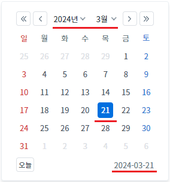
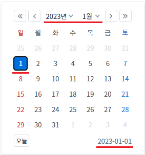
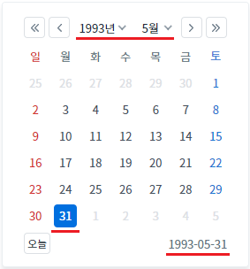
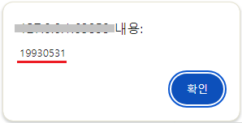
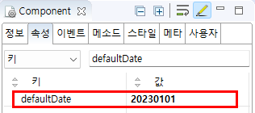

[InputCalendar] 입력값이 없을 때, 달력에 표시할 날짜를 설정하기
1개요
InputCalendar의 입력값이 없을 때, 달력에 표시할 날짜를 설정하고, 설정된 날짜를 확인하는 예제입니다. 다음은 예제에서 사용한 속성과 메소드입니다.
defaultDate: (속성) 입력값이 없을 때, 달력에 표시되는 날짜
setDefaultDate: (메소드) defaultDate 속성의 value를 설정
getDefaultDate: (메소드) InputCalendar에 설정된 defaultDate의 value를 반환
2구현된 기능
(기본 설정) 'defaultDate' 속성이 설정되지 않은 경우
'defaultDate' 속성에 날짜를 설정한 경우
'setDefaultDate' 메소드로 'defaultDate' 속성에 날짜를 설정한 경우
3예제 테스트 방법
3.1(기본 설정) 'defaultDate' 속성이 설정되지 않은 경우
예제 영역 '(기본 설정) defaultDate = ""'에서 테스트합니다.1
STEP 1: 캘린더 아이콘을 클릭합니다.
'defaultDate' 속성의 기본 설정 값인 빈 문자열로 설정되어 있습니다.
Image 1.브라우저(Chrome) 실행 예시 - 캘린더 아이콘

2
STEP 2: 실행 결과를 확인합니다.
달력에 선택된 날짜가 오늘 날짜로 표시된 것을 확인합니다.
Image 2.브라우저(Chrome) 실행 예시 - 캘린더

3.2'defaultDate' 속성에 날짜를 설정한 경우
예제 영역 'defaultDate 속성에 날짜 설정'에서 테스트합니다.1
STEP 1: 캘린더 아이콘을 클릭합니다.
defaultDate 속성에 문자열 "20230101"이 설정되어 있습니다.
Image 3.브라우저(Chrome) 실행 예시 - 캘린더 아이콘

2
STEP 2: 실행 결과를 확인합니다.
달력에 선택된 날짜가 2023년 1월 1일로 표시된 것을 확인합니다.
Image 4.브라우저(Chrome) 실행 예시 - 캘린더

3.3'defaultDate' 속성에 메소드로 날짜 값을 설정하기
예제 영역 '스크립트로 defaultDate 속성에 날짜 설정'에서 테스트합니다.1
STEP 1: 버튼 '달력에 표시되는 날짜를 1993-05-31로 변경하기'를 클릭합니다.
문자열 "19930531"이 defaultDate 속성에 설정됩니다.
2
STEP 2: 캘린더 아이콘을 클릭합니다.
Image 5.브라우저(Chrome) 실행 예시 - 캘린더 아이콘

3
STEP 3: 실행 결과를 확인합니다.
달력에 선택된 날짜가 1993년 5월 31일로 표시된 것을 확인합니다.
Image 6.브라우저(Chrome) 실행 예시 - 캘린더

4
STEP 4: 버튼 '달력에 표시되는 날짜를 획득하여 메시지 창에 표시하기'를 클릭합니다.
5
STEP 5: 실행 결과를 확인합니다.
브라우저 메시지 창(alert)에 '19930531'이 표시됩니다.
Image 7.브라우저(Chrome) 실행 예시 - alert

4구현 예시
4.1defaultDate 속성 설정하기
1
InputCalendar의 속성을 정의합니다.
InputCalendar의 달력 아이콘을 클릭 시 표시되는 달력의 날짜를 설정하기 위해 아래의 속성을 설정합니다.
[필수] defaultDate="YYYYMMDD"
[default:""(빈 스트링), YYYYMMDD] 입력 값이 없는 상태에서 사용자가 초기에 달력 아이콘을 클릭할 시 표시되는 달력에 날짜를 설정한다.
Image 8.웹스퀘어 스튜디오의 Component View - 속성 설정 예시

Example 1.Source
<!-- inputCalendar 의 소스 본문 예시 --> <w2:inputCalendar defaultDate="20230101" id="ica_exam_2"> </w2:inputCalendar>
4.2defaultDate 속성을 메소드로 설정하기
1
InputCalendar의 setDefaultDate 메소드를 사용하여 defaultDate 속성에 값을 설정합니다.
Example 2.Script
// InputCalendar 'ica_exam_3'의 기본 날짜를 '19930531'으로 설정하기 ica_exam_3.setDefaultDate("19930531");
4.3defaultDate 속성의 설정값을 메소드로 확인하기
1
InputCalendar의 getDefaultDate 메소드를 사용하여 defaultDate 속성에 설정되어 있는 값을 확인합니다.
Example 3.Script
// InputCalendar 'ica_exam_3'의 defaultDate 속성에 설정된 값을 반환받습니다. var defaultDate = ica_exam_3.getDefaultDate();
5주요 API
defaultDate
getDefaultDate
setDefaultDate